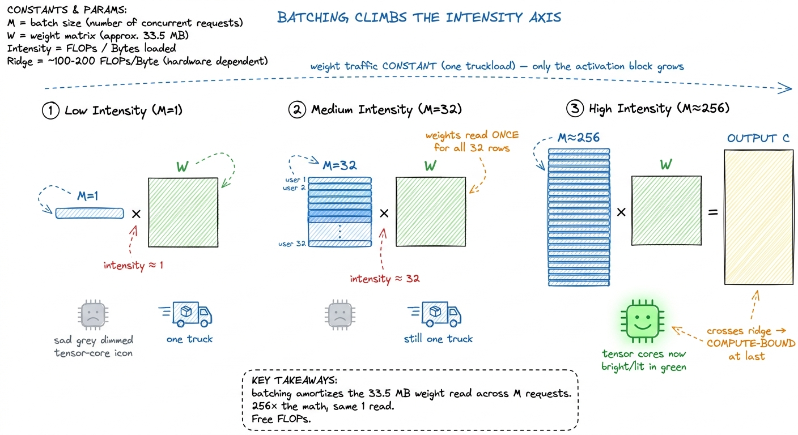
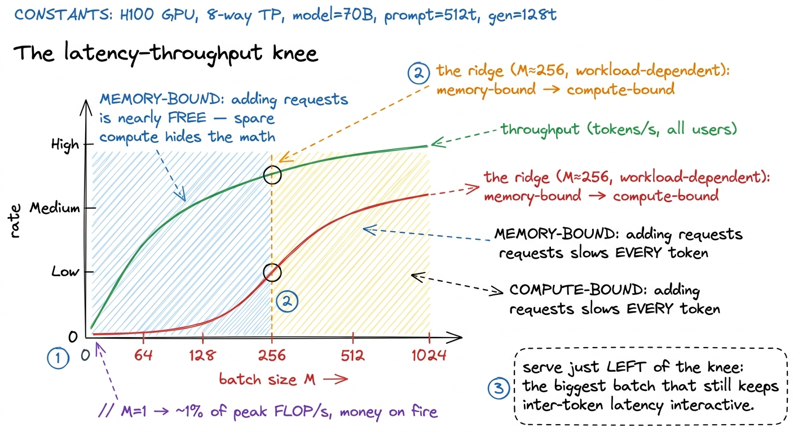
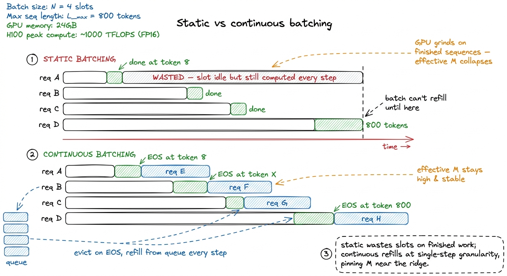
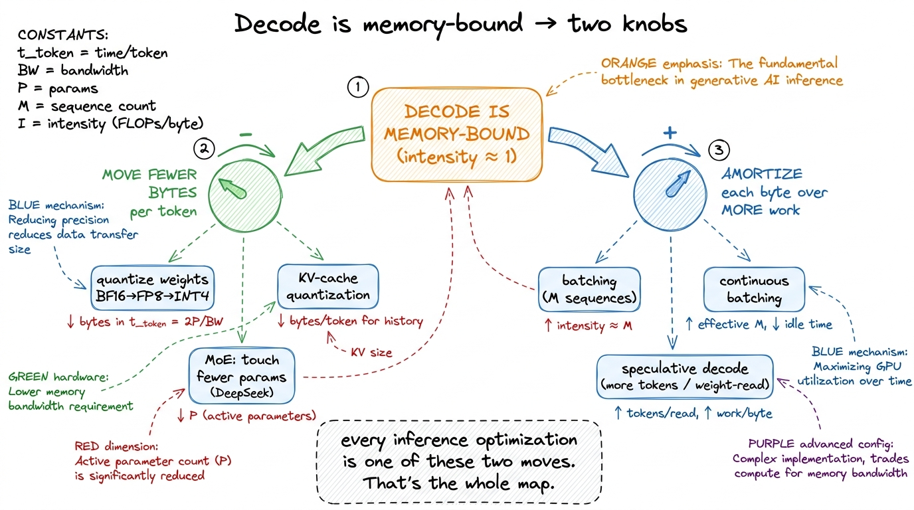

Batched decode: the GEMV problem
Here is a puzzle that took me an embarrassingly long time to make peace with. You train a large language model, and every second of that training is a parade of enormous matrix multiplications — the fat, square GEMMs we spent ten kernels learning to squeeze the last few percent out of. The GPU runs hot, the tensor cores are lit, the profiler shows you're pulling a real fraction of the machine's rated 989 TFLOP/s. Life is good.
Then you deploy that exact same model. A user types a prompt. You start generating the reply — and the GPU, the same GPU running the same weight matrices, suddenly goes nearly idle. Nsight Compute tells you the tensor cores are sitting at 1-3% utilization. You are paying for a Ferrari and it is stuck in a parking lot.
Nothing about the hardware changed. Nothing about the model changed. So what happened?
That question is the entire subject of this article. The one-sentence answer is: generating text one token at a time turns every fat matrix multiply into a skinny matrix-vector multiply, and a matrix-vector multiply is memory-bound. Everything else — why batching works, why the whole inference industry is organized around a batch size of a few hundred, why vLLM exists — falls out of that one fact once you really believe it. My goal is that by the end you believe it in your bones, from the arithmetic up.
I'm going to assume almost nothing. If you know that a matrix multiply is "rows times columns" and that reading from memory takes time, you have enough to start. We'll build the rest by hand.
First, the one idea everything hangs on: arithmetic intensity
Before we touch decode, I want to install one mental model, because we will reuse it in every section. Here it is.
A GPU is really two machines bolted together. One machine does arithmetic — it multiplies and adds numbers, very fast. The other machine moves bytes — it hauls data from the big slow memory (HBM) up to the tiny fast memory next to the arithmetic units. These two machines run at the same time, and your kernel is only as fast as the slower of the two.
Horace He has a factory analogy I love, and I'll borrow it. Think of the arithmetic units as a factory and HBM as a warehouse across town. To make anything, the factory needs raw materials trucked in from the warehouse. It does not matter how big and fast your factory is if the trucks can't keep it fed. If the factory finishes its work and then stands around waiting for the next truck, you didn't buy speed — you bought idle time.
 figure rendering · The core mental model. The math units are only as fast as the pipe fee
figure rendering · The core mental model. The math units are only as fast as the pipe feeNow, the natural question: for any given operation, which machine is the bottleneck? The math machine or the byte machine?
There's a clean way to decide. For every byte you drag in from HBM, count how many arithmetic operations (FLOPs) you can do with it before you have to go back for more. That ratio — FLOPs per byte — is called arithmetic intensity, and it is the single most important number in this entire article.
Let's ground it. The H100 does about 989e12 FLOP/s of BF16 math and moves about 3.35e12 bytes/s from HBM.1 These are H100 SXM numbers with the tensor cores doing BF16. The exact figures shift by SKU and by whether sparsity is on — the H100 PCIe has lower bandwidth (~2 TB/s), and the newer B200 pushes both numbers up. The ratio is what matters, and it stays in the same ballpark across the fleet. Divide one by the other:
ridge point = 989e12 FLOP/s ÷ 3.35e12 byte/s ≈ 295 FLOP per byteThis number, ~295, is the ridge point (or "break-even" intensity). It's the crossover. Here's how to read it:
- If your operation does more than 295 FLOPs per byte it reads, the math machine is the bottleneck. You are compute-bound. The trucks can keep the factory fed; the factory is the limit. This is the good place to be — you're actually using the tensor cores you paid for.
- If your operation does fewer than 295 FLOPs per byte, the byte machine is the bottleneck. You are memory-bound. The factory finishes early and waits for trucks. Doubling the factory's size would change nothing.
Horace frames the same idea from the other direction, and it's a good gut check: at 4 bytes per FP32 number, an A100 can load about 400 billion numbers per second but do around 20 trillion math ops per second — so you need roughly 100 operations on every number you load just to break even on the older card.2 That ~100 is for FP32 on non-tensor-core (CUDA core) math on the A100 — Horace's figure. Tensor cores raise the compute number a lot (312 TFLOP/s of them on the A100), which is exactly why the break-even intensity is even higher on modern hardware — ~295 on the H100. Faster factories need even more materials per truck to stay busy. The trend is not your friend for memory-bound ops.
Keep this one picture — factory, warehouse, one road, the number 295 — because we're about to watch decode fall catastrophically on the wrong side of it.
Why decode is a skinny matrix-vector multiply
Let's zoom into one layer of the model and do the whole thing by hand, because the by-hand version is the whole story.
Pick a single linear layer — a projection with a weight matrix W of shape [d_out, d_in]. To keep the arithmetic clean, say d_in = d_out = 4096. This one layer takes an input, multiplies it by W, and produces an output. Every transformer is stacks of layers like this (plus attention, which we'll get to).
During training, or during prefill — the phase where you process the user's whole prompt at once — you shove a big batch of M tokens through this layer together. The input X is a matrix of shape [M, 4096]. If M = 4096, you're multiplying a [4096, 4096] matrix by a [4096, 4096] matrix. That's a big square GEMM (General Matrix-Matrix multiply). Its arithmetic intensity is enormous — up in the thousands of FLOPs per byte — because every weight you load gets reused across all M rows of input. Thousands is way past 295, so this layer is comfortably compute-bound. The tensor cores earn their keep.
Now generate. Autoregressive decoding produces exactly one token per forward pass. You feed in the single most recent token, run the entire network top to bottom, sample the next token, append it, and repeat. So for that same layer, right now, M = 1. The input X is [1, 4096] — that's not a matrix, it's a vector.
Multiplying a [4096] vector by a [4096, 4096] matrix is a GEMV — a General Matrix-Vector multiply. Same weights. Same hardware. But the shape collapsed from square to a single thin sliver, and that shape change is everything.
 figure rendering · The identical weight matrix is compute-bound at M=4096 and memory-boun
figure rendering · The identical weight matrix is compute-bound at M=4096 and memory-bounThe napkin math that makes it undeniable
Let's compute the arithmetic intensity of that single-token GEMV, because it is short enough to do in your head and it settles the argument for good.
The FLOPs. A matrix-vector product of a [4096, 4096] matrix and a length-4096 vector does one multiply and one add per matrix element. That's 2 × 4096 × 4096 ≈ 33.5 million FLOPs (I'll write MFLOP).
The bytes. To do that multiply, we have to read the weight matrix out of HBM. It has 4096 × 4096 elements, and in BF16 each is 2 bytes, so that's 4096 × 4096 × 2 ≈ 33.5 MB. And the input vector? It's 4096 × 2 = 8 KB. That's a rounding error next to 33.5 MB — literally 0.02% of the traffic. So essentially all the bytes are weights.
Now divide:
intensity ≈ 33.5e6 FLOP ÷ 33.5e6 bytes ≈ 1 FLOP per byteOne FLOP per byte. Sit with that. The ridge point is 295. We are almost three hundred times below the break-even line. We loaded a weight, we used it exactly once, and we threw it away. There is no tiling trick, no shared-memory cleverness, no fancy wgmma tensor-core instruction that can rescue this — because the fundamental job of the kernel is to stream a giant matrix past a tiny vector and touch each weight a single time. This is the exact same "no reuse" disease we diagnosed in the naive GEMM kernel — except there it was a bug we fixed with tiling, and here it is not a bug at all. At M = 1 there is simply nothing to reuse. It's the arithmetic of the problem.
Let me put the intensity numbers on one axis so the gap is visceral.
 figure rendering · Every operation lives somewhere on this line. Single-token decode is s
figure rendering · Every operation lives somewhere on this line. Single-token decode is sWhat memory-bound decode actually costs, in milliseconds
Here's a gift that comes with being memory-bound: your performance becomes trivially predictable. When you're compute-bound, latency depends on messy things — how well the kernel tiles, how the scheduler packs warps, clock throttling. But when the bottleneck is just "read every weight from HBM once," the time to generate a token is almost pure division.
For a model with P parameters stored in BF16, one decode step reads roughly 2P bytes (2 bytes per parameter) up from HBM.3 I'm counting only the linear-layer weights here. A full step also reads the KV cache — the stored keys and values for every previous token — and at long context lengths that traffic can rival or exceed the weight traffic. We treat the KV cache in its own article; for now, the weight read is the dominant, cleanest term to reason about. On an H100 with 3.35 TB/s of HBM3, the floor on per-token latency is:
t_token ≈ 2 · P / 3.35e12 secondsLet's plug in a 7-billion-parameter model:
t_token ≈ 2 × 7e9 / 3.35e12 ≈ 4.2 ms per tokenThat's about 240 tokens per second as an absolute ceiling — before attention, before the KV cache, before kernel-launch overhead, before anything real.4 This is an optimistic upper bound, and reality is slower. It assumes you perfectly saturate HBM, which small skinny kernels rarely do; it ignores KV-cache reads that grow with context length; and it ignores the per-kernel launch overhead that, for tiny decode kernels, can itself be a meaningful slice of the step. Treat 4.2 ms as "you cannot possibly be faster than this," not "you will hit this."
Now stare at that formula and notice what is missing: the tensor cores, the 989 TFLOP/s, the clock speed of the math units. None of them appear. They cannot make this number smaller. You could magically double the H100's compute and per-token latency would not budge by a nanosecond, because the trucks — not the factory — set the pace.
 figure rendering · Per-token latency is just weight-bytes divided by bandwidth. The tenso
figure rendering · Per-token latency is just weight-bytes divided by bandwidth. The tensoWhen I first profiled a decode kernel in Nsight Compute, the compute-throughput chart sat down in the low single digits — the same embarrassing neighborhood as kernel 1's 1.3% — while the DRAM-throughput chart was pinned near the ceiling. My first instinct was that I had a broken kernel. I didn't. The kernel was doing precisely what physics demands: heaving weights across town, one truck at a time, with the factory watching.
Batching: buying back arithmetic intensity for free
Now the good part — the escape hatch. And it's beautiful, because the extra work it does is essentially free.
Go back to the truck picture. The expensive thing — reading the 33.5 MB weight matrix — happens no matter how many tokens we process. If one token needs this layer, we truck in all the weights once. Here's the key question I want you to ask: what if we had more than one token that needed the same weights at the same time?
Suppose 32 different users each sent us a request, and all 32 happen to be at the decode step for this layer right now. We could process them one at a time — read the weights, do user 1, read the weights again, do user 2, and so on, 32 truckloads of the same materials. That's insane. Or: we could read the weights once and multiply them against all 32 users' vectors while they're sitting in the fast memory next to the factory.
That second option is batching, and it's the whole game. Stack M decode requests into a batch and the input X becomes [M, 4096] again — a short, fat matrix. The skinny GEMV fattens back into a real GEMM. Let's redo the intensity with a batch of M:
FLOP ≈ 2 · M · 4096 · 4096 (M times the math)
bytes ≈ 4096·4096·2 (weights, ONCE) + M·4096·2 (M activation vectors)The weight term doesn't grow with M — that's the magic. The activation term is tiny. So the intensity is:
intensity ≈ (2·M·4096·4096) / (4096·4096·2) ≈ M FLOP per byteIntensity ≈ M. Read that again: the arithmetic intensity of batched decode is just the batch size. At M = 1, intensity is 1 and we're stranded. At M = 32, it's ~32. To cross the ridge point of ~295 and finally become compute-bound — to finally light up the tensor cores — we need a batch of roughly 256 to 300 concurrent sequences.5 In practice you tip compute-bound a bit before the naive ridge suggests, because at larger M the weight matrix starts fitting into and being reused out of the ~50 MiB L2 cache instead of being re-fetched from HBM, which effectively raises your usable bandwidth and shifts the crossover left. The exact knee is workload- and model-dependent — always measure it rather than trusting 295 as gospel.
That number — a few hundred concurrent requests — is the number the entire LLM-serving industry is organized around. vLLM, TensorRT-LLM, SGLang, every serious inference stack, all exist in large part to keep that batch fat.
Why is this "free"? Because a batch of 256 does 256× the FLOPs but reads the weights the same one time. We converted idle factory time into useful work without buying a single extra truck. The GPU that ran at ~1% of peak on one sequence can run near its compute ceiling on a full batch. Total throughput — tokens per second summed across all users — can climb by more than two orders of magnitude before you hit the compute wall.

figure rendering · The weight read is a fixed cost paid once. Every extra sequence in theThe catch: batching trades latency for throughput
If batching were pure upside, this article would end here and serving would be trivial. It isn't, because the two numbers you actually care about pull against each other. Let me define them carefully, because people conflate them constantly.
Throughput is total tokens per second across every user on the box. It's what the person paying the GPU bill cares about. Throughput loves big batches, because each weight read gets amortized over more requests.
Latency is how long your token takes to come back — what the person staring at the screen cares about. It has two flavors. Time-to-first-token is dominated by prefill (processing your prompt). Inter-token latency is the gap between successive tokens during generation. Bigger batches hurt inter-token latency, in two distinct ways, and it's worth separating them:
- Waiting to join. A request that shows up mid-step has to wait for the current step to finish and for a slot in the batch to open. Under a clumsy scheduler it might wait a long time.
- The step itself gets slower. This is the subtle one. Below the ridge point, adding sequences is nearly free — you were memory-bound with spare compute lying around, so the extra math hides in the shadow of the weight read. But above the ridge, you've run out of spare compute, and now every additional sequence lengthens the step in proportion. Past the knee, a bigger batch literally makes each user's tokens come out slower.
So the operating point is a genuine tradeoff. Push the batch too small and you set money on fire — an H100 running decode at M = 1 delivers maybe 1% of the FLOP/s you're renting. Push it too large and individual users watch their tokens dribble out, and you risk overflowing the KV-cache memory budget besides. Most serving stacks land somewhere in the tens-to-low-hundreds of concurrent sequences: fat enough to drag intensity up toward the ridge, not so fat that per-user latency stops feeling interactive.

figure rendering · Throughput and latency trade against each other across the ridge. TheContinuous batching: keeping the batch full at every step
We have one problem left, and it's the one that separates a toy batcher from a production one. To fill a batch you need enough concurrent requests — but real requests don't arrive politely, and worse, they don't finish politely.
The naive approach is static batching: collect N requests, run them together in lockstep until every one of them emits its end-of-sequence token, then start the next group. This sounds fine until you remember that sequences finish at wildly different lengths. One user asks for a yes/no answer and is done in 8 tokens. Another asks for an essay and runs 800. Under static batching, the whole batch is held hostage by its longest member. The 8-token request finished long ago, but its slot in the [M, d] activation matrix just sits there, still getting multiplied by the full weight matrix every single step, contributing nothing but still burning its share of the compute and, crucially, still holding a slot that a waiting user could use.

figure rendering · Static batching lets finished sequences hold slots hostage, collapsingContinuous batching (also called in-flight or iteration-level batching) fixes exactly this. It makes batch membership dynamic at the granularity of a single decode step. The moment a sequence emits its end token, it's evicted and its slot is instantly handed to a waiting request from the queue.6 This is the core scheduling idea behind vLLM and TensorRT-LLM's in-flight batcher. It pairs naturally with PagedAttention-style KV-cache management: because slots free and fill constantly, you can't assume each request owns a neat contiguous block of cache, so you page the KV cache like an OS pages memory. The scheduler and the memory allocator are two halves of the same trick. The batch is refilled every iteration instead of every group, so the GPU never wastes cycles multiplying finished sequences, and the effective M stays high and stable.
Here's why I insist this belongs in a kernel article and not just a scheduling one. The entire justification for the scheduler is the intensity curve we built three sections ago. Continuous batching exists for one reason: to keep M — and therefore your position on the intensity axis — pinned as close to the compute-bound ridge as the latency budget allows, at every single step, without the static-batching bubbles that would drop you back toward the memory-bound floor. The kernel and the scheduler are solving one problem from two ends. The kernel makes each batched GEMV as efficient as the hardware physically allows. The scheduler makes sure there's always a fat enough batch for that efficiency to be worth anything. Neither is any good without the other.
Where this leaves the tensor cores — and where we go next
Sit with the irony for a second, because it's the deepest point here. The tensor cores are the most expensive, most heavily marketed silicon on the H100 — 989 TFLOP/s, the number on every slide. And in single-sequence decode they are nearly idle, because a GEMV has no reuse for them to exploit. They only start earning their transistors once batching has fattened the matmul back into a real GEMM. This is the deep reason the training story and the inference story feel like they come from different universes: training is a compute-bound world where the GEMM ladder rules and the factory is the hero; decode is a memory-bound world where bandwidth and scheduling rule and the trucks are the hero. Same tensor cores sitting underneath both.
And here's the unifying lesson to carry out. Every serious inference optimization downstream of this article is a variation on a single theme — decode is memory-bound, so spend your effort either moving fewer bytes per token or amortizing each byte across more useful work:
- Batching (this article) amortizes each weight-byte across more sequences.
- Weight quantization moves fewer bytes per token by storing weights in FP8 or INT4 instead of BF16 — fewer bytes in the numerator of that
t_tokenformula. - KV-cache tricks (paging, quantization, GQA/MQA) cut the other big memory term we set aside.
- Speculative decoding gets more useful tokens out of each single weight-read by verifying several draft tokens at once.
- MoE routing (as in the DeepSeek-style models) touches only a fraction of the parameters per token, slashing
Pin the very same formula — a big reason MoE is so attractive for serving. DeepSeek-V4-Pro, for instance, holds ~1.6T total parameters but activates only ~49B per token; it's that activated count, not the total, that lands in the2Pbyte read, so the model reads roughly 3% of its own weight bytes each step.
They all point at the same two knobs: fewer bytes, or more work per byte. Once you see decode as a bandwidth problem, every one of these stops looking like a bag of tricks and starts looking like the obvious move.

figure rendering · The entire inference-optimization landscape reduces to two moves againIn the next article we take the most brutal of the left-hand levers — weight quantization — and measure exactly how many bytes-per-token, and therefore how many tokens-per-second, we buy back by dropping weights from BF16 to FP8 and below. The formula t_token ≈ 2P / BW has a 2 in it for a reason, and we're about to attack that 2 directly.